NaturalEdit
Code Modification through Direct Interaction with Adaptive Natural Language Representation
Ningzhi Tang, David Meininger, Gelei Xu, Yiyu Shi, Yu Huang, Collin McMillan, Toby Jia-Jun Li
{ntang, dmeining, gxu4, yshi4, cmc, toby.j.li}@nd.edu, yu.huang@vanderbilt.edu
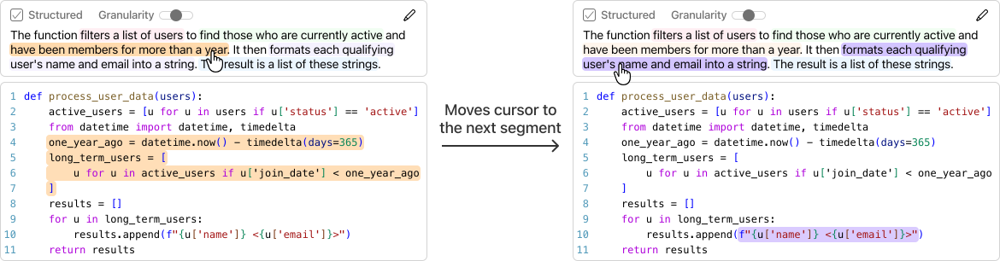
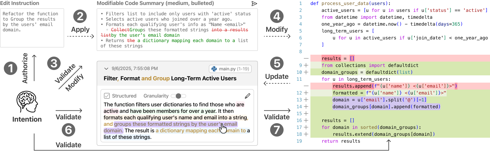
Code modification is cognitively demanding
Developers devote a substantial portion of their effort to code modification: altering existing programs to fit new tasks.
“In the modification task the first step is the development of internal semantics representing the current program. The statement of the modification must be reflected in an alteration to the internal semantics, followed by an alteration of the programming statements.”
Shneiderman & Mayer, 1979Construct an internal semantics of the existing code
Form a modification plan, then map it back to the program's formal syntax
Verify that modifications reflect their intent without unintended side effects
LLMs accelerate code modification, yet developers still must ensure their intent is well expressed (“fuzzy abstraction matching”) and validate the AI-generated code.
NL code summaries can externalize internal semantics
Natural language (NL) summaries describe the functionality of the program in human-readable form.
1def process_user_data(users): 2 """ 3 The function takes a list of user dictionaries and filters 4 out those who are not active. It then further filters for 5 users who joined more than a year ago and returns a list of 6 their names and emails formatted as strings. The result is 7 a list of long-term, active users' contact information. 8 """ 9 active_users = [u for u in users if u['status'] == 'active'] 10 from datetime import datetime, timedelta 11 one_year_ago = datetime.now() - timedelta(days=365) 12 long_term_users = [ 13 u for u in active_users if u['join_date'] < one_year_ago 14 ] 15 results = [] 16 for u in long_term_users: 17 results.append(f"{u['name']} <{u['email']}>") 18 return results
What does it take to modify code through NL summaries?
In our preliminary study, 15 developers modified code by editing NL summaries in a basic prototype.
Published in VL/HCC 2025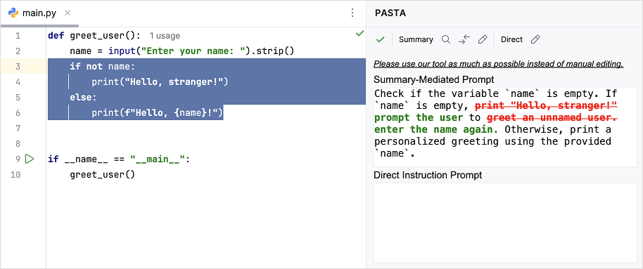
Modifying summaries forces code comprehension and enables better control over code edits.
NaturalEdit treats NL as a first-class interactive representation
A  VS Code extension with three core features, each grounded in a cognitive dimension and addressing the shortcomings identified earlier.
VS Code extension with three core features, each grounded in a cognitive dimension and addressing the shortcomings identified earlier.
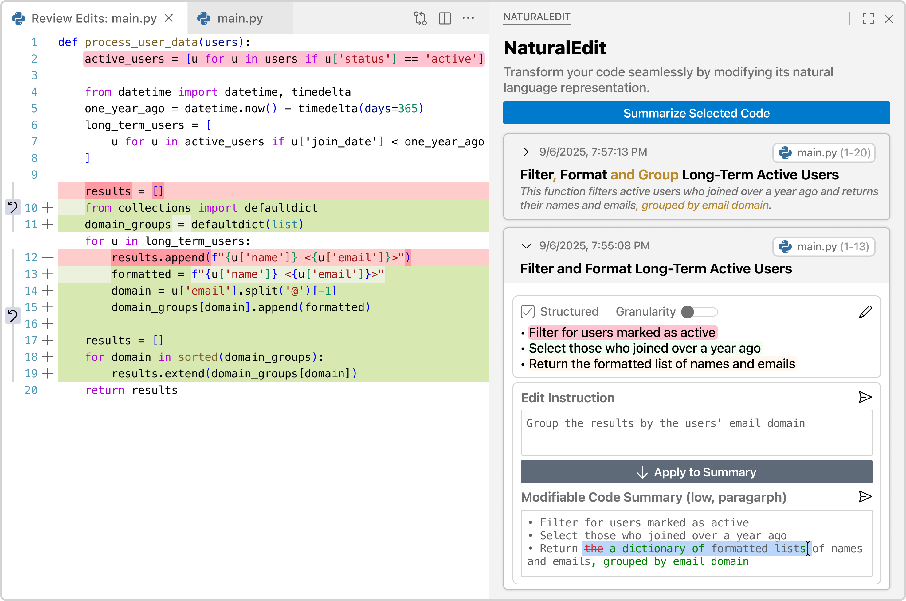
Adaptive Multi-Faceted Representation
Adapts NL summaries in structure and granularity to the developer's current task
Abstraction GradientInteractive Cross-Representation Mapping
Fine-grained, structurally stable links between NL segments and code
Closeness of MappingIntent-Driven Bidirectional Synchronization
High-level goals as free-form instructions, translated into NL edits and code changes with incremental diffs
Viscosity, Visibility & ConsistencyAdaptive multi-faceted representation
NL summaries adjustable along two orthogonal dimensions: Structure and Granularity.
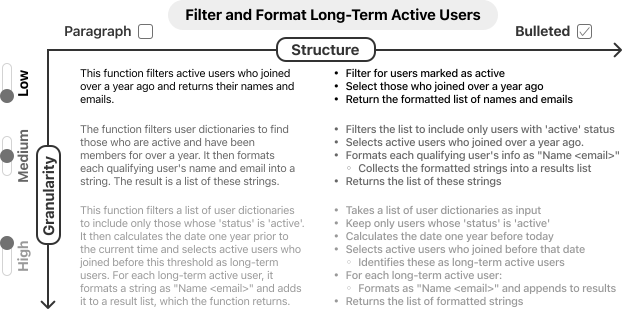
Interactive cross-representation mapping
Each NL representation is segmented into semantic units, explicitly linked to the code they describe.
Intent-driven bidirectional synchronization
NaturalEdit in VS Code
The NL-mediated workflow preserves technical soundness
GPT-4.1 in both conditions; Pass@1 against each benchmark's ground-truth unit tests
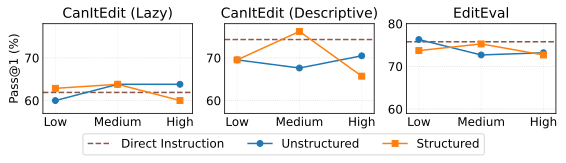
maximum −8.98%
Comparable correctness
Errors arose when the NL representation omitted or simplified key semantics, such as boundary conditions: a trade-off between NL readability and semantic precision.
vs. −4.45% on Descriptive
More robust to vague instructions
Grounding vague intent in an explicit NL representation reduces the risk of underspecification.
Intermediate NL artifacts were consistently rated high quality
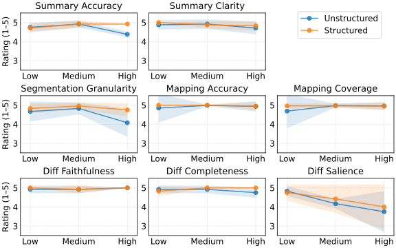
72 summaries (36 with diffs) and 487 mappings from the six user-study tasks, rated by two experts on a 5-point scale
mean scores between 4.5 and 5.0
Segmentation dipped for high-granularity paragraphs: consecutive highlights covered nearly identical code
Diff salience declined with granularity: many insertions, deletions, and rewordings obscure important changes
Within-subjects study with 20 experienced developers
Participants
20 developers, including 7 industry professionals; 9.55 years of programming experience on average; all use LLM tools frequently or almost always
Conditions
NaturalEdit vs. a feature-ablated Baseline: a fixed medium-level paragraph, no mapping, and manual summary editing
Protocol
Two tasks, 25 minutes each, counterbalanced in CodeSandbox (a web-based VS Code)
Measures
Interaction logs, NASA-TLX, UMUX-Lite, custom Likert items, and a 20-minute semi-structured interview
- Format the x-axis tick labels
- Add the current price to the backend API
- Display it as a reference line on the chart
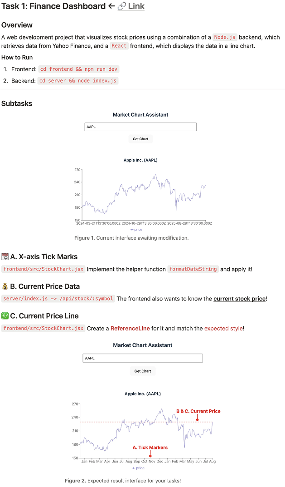
- Extend the scraper with advanced statistics
- Adjust n_estimators of the XGBRanker model
- Improve the chart's type and color scheme
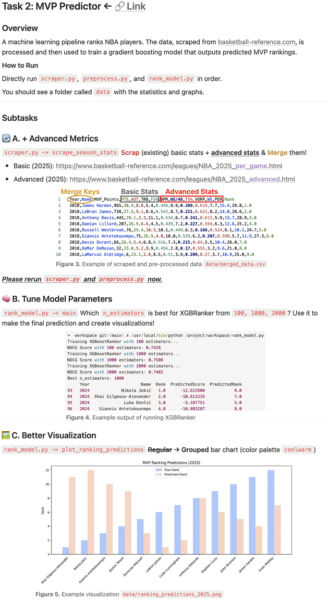
Higher correctness and usability at comparable time
Comparable completion time (20.85 vs. 19.30 min), ease of use, learnability, and NASA-TLX workload.
Comprehend-then-act, contrasting with vibe coding
Enforced comprehension and shared grounding: the NL summary served as a shared ground for validating intent and system interpretation.
Declarative vs. procedural tasks
NaturalEdit shifted modification toward an NL-centric workflow
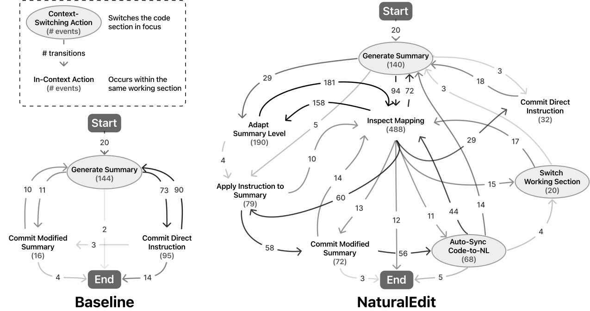
modifications completed via the modified summary in NaturalEdit
via direct-instruction fallback in Baseline, where manual summary editing felt cumbersome and taking significant effort (P5)
Inspect Mapping: the most frequent action, bridging NL and code
Each feature supported its targeted dimension
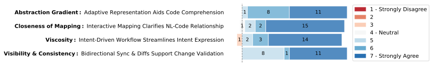
Top-down comprehension on demand
Start from a coarser view for initial understanding (P3); high granularity and bullets favored for editing
Mapping prepared and validated edits
helped me not only understand the code but also plan how to change it (P5)
Instructions did the heavy lifting
Concise instructions (12 words) expanded into precise summary edits (18 words), e.g., best highest NDCG
Diffs as a basis for validation
Like reviewing a GitHub commit for accidental changes (P6)
Generalizing to spec-driven development
In tools such as GitHub Spec Kit and Amazon Kiro, lightweight NL documents (e.g., design.md, tasks.md) serve as the primary medium for human-AI interaction.
alignment
Navigate NL artifacts across levels of abstraction
Link spec items to their implementations, making NL documents live and navigable
Modify NL to drive code changes while reflecting those changes back
Developers must verify not only that the code is correct, but also that the NL artifact captures their intent and that the AI's actions remain consistent with it.
NaturalEdit: Code Modification through Direct Interaction with Adaptive Natural Language Representation
Ningzhi Tang, David Meininger, Gelei Xu, Yiyu Shi, Yu Huang, Collin McMillan, Toby Jia-Jun Li
{ntang, dmeining, gxu4, yshi4, cmc, toby.j.li}@nd.edu, yu.huang@vanderbilt.edu
This research was supported in part by a Google Cloud Research Credit Award, a Google Research Scholar Award, a gift from Adobe, an Edison Innovation Fellowship from the Notre Dame IDEA Center, and NSF grants CCF-2211428, CCF-2315887, CCF-2100035, CCF-2211429, and CCF-2442682. Any opinions, findings, or recommendations expressed here are those of the authors and do not necessarily reflect the views of the sponsors.